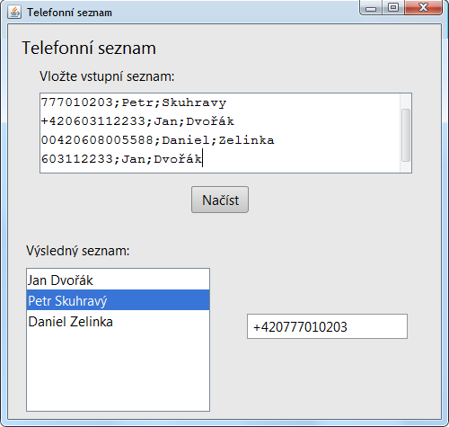

Úkol z lekce 06 - Telefonní seznam
Dokončete aplikaci z hodiny, která zpracovává telefonní seznam.
Zadání nechám celkem volné. Zde je nicméně pár požadavků:
Do aplikace má být možno zadávat telefonní čísla ve formátu:
- 604112233 (doplní předvolbu země na +420)
- 00420604112233 (změní 00 na +)
- +420604112233 (nic nemění)
Výsledný seznam telefonů má být bez duplicit a setříděný vzestupně
Příklady čísel jde najít v souboru z Lekce06: Telefony.txt
Aplikace má být okenní (GUI)
Komponenty mají být pozicované pomocí LayoutManageru, nikoliv po pixelech. Doporučuji zvolit GroupLayout (Free design)
Pro vstupní pole doporučuji JTextArea (nepovinné)
Pro výsledný seznam zkuste použít JList (nepovinné)
Rozšiřující zadání
V lekci 06 jste dostali ještě jeden soubor: TelefonniSeznam.csv.
Zkuste napsat druhou aplikaci (nezničte si původní aplikaci), která vyčistí a zobrazí tento seznam. Narozdíl od prvního příkladu, tento seznam obsahuje osoby a k nim přiřazená telefonní čísla.
Zkuste tedy opět normalizovat a odstranit duplicity. Přál bych si ale, aby vše fungovalo tak, že si v komponentě JList vyberu konkrétního člověka a teprve po výběru uvidím jeho telefonní číslo v samostatném JTextFieldu. Jako extra bonus: Chtěl bych, aby uživatelé byli setříděni podle příjmení, ale vypsáni ve tvaru "KrestniJmeno Prijemni".
